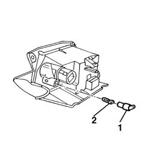
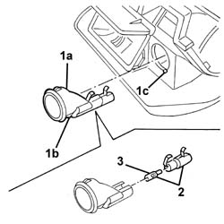

7065C73 cigar lighter bulb - r r - includes r r cigar lighter
- Path
- Procedures > 70 FITTINGS > 7065 SEAT BELTS AND ACCESSORIES > 7065C accessories and decorations > 7065C73 cigar lighter bulb - r r - includes r r cigar lighter
- Kind
- repair procedure (removal / refitting; the operation number is the code)
- Applies to
- all engines; all production periods
- Interactive page
- https://sloeber94.github.io/elrnDB-a156/en/#/3238992
Applies to: all engines; all production periods
 Removing
Removing
 Refitting
Refitting7065C72 front cigar lighter socket/power point - fasten
1. Extract the bulb holder.
2. Extract the bulb from the bulb holder. (Press fit).

Applies to: all engines; all production periods
Refitting
RemovingInsert the bulb in the bulb holder.
Reinsert the bulb holder in the ashtray.
Applies to: all engines; production: da 03/02 a 09/03, da 10/03
Removing
Refitting7065C72 front cigar lighter socket/power point - fasten
1. Release and remove the bulb holder ring nut (1a) releasing the retainer (1b) from the housing (1c).
2. Extract the bulb holder and bulb (press fit).
3. Extract the bulb (press fit).

Applies to: all engines; production: da 03/02 a 09/03, da 10/03
Refitting
RemovingCheck that the bulb is not damaged.
Fit the bulb in position.
Fit the bulb holder in place.
Fit the bulb holder ring nut in place and attach the retainer.